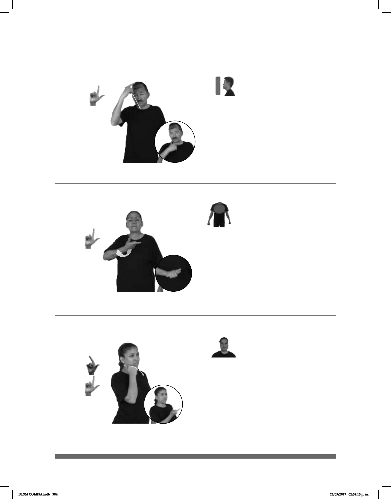

384
Seña: SM
L.1
Palma hacia adentro.
De la frente a la
barbilla.
Recto.
sust. f. Tiempo
comprendido entre la puesta del Sol
y el amanecer durante el cual hay
oscuridad.
Seña: SM
L.1
La palma inicia hacia
arriba y termina hacia abajo.
Sobre el pecho.
El antebrazo gira y
cambia la orientación de la mano.
: Cejas hacia
arriba, ceño fruncido.
v. intr. Resultar algo,
alguna persona o algún
acontecimiento de poco o ningún
agrado para alguien.
Seña: SM
Seña que pasa de L.6
a L.1
Palma hacia adentro.
Sobre la mejilla.
Recto hacia el frente
mientras el dedo índice se extiende.
: Rotación de
cabeza de derecha a izquierda, ojos
semicerrados.
v. tr. No tener el deseo, la
voluntad o las ganas de obtener o de
hacer algo; no tener la intención de
hacer o de lograr alguna cosa.
(L-130)
(L-131)
(L-132)
pro-DOS-DE-NOSOTROS NOS-VEMOS MAÑANA NOCHE
Nos vemos mañana en la noche.
______________________________neg__
ESE VESTIDO FEO pro-YO NO-GUSTAR
Ese vestido es feo, no me gusta.
__________________________neg_
pro-YO PASEAR HOY NO-QUERER
Hoy no quiero ir a pasear.
DLSM COMISA.indb 384 25/09/2017 02:51:15 p. m.